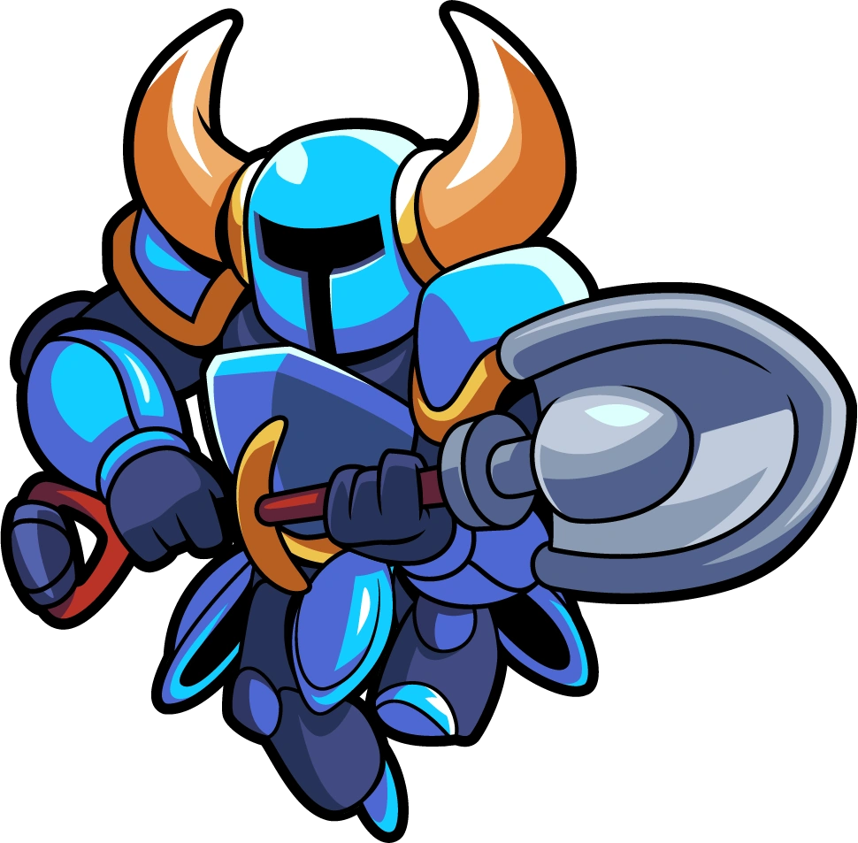

5/5 Single handedly one of the best platformers of our time, with
amazig story, character, levels, and music.

4/5 Very fun movement, boss fights, and a nice story, not only in the
main story but the dlc's as well. Though creativity for boss fights
are lacking.

5/5 A very expressive and fun 3D platformer. While I feel the base
games customization is not creative, the dlcs give you plenty more to
work towards and have fun with.
JRPG

4/5 A game with creative dungeons and amazing music. Where the
importance of your bonds with other people help you throughout the
game. While the original ending lacks in many places, the Royal ending
makes the game end in a more satisfying way.

4/5 Great music and beautiful landscape with a cast of powerful
characters and strong bonds formed between them. The combat is
probably the best in the whole series. Despite a semi confusing story,
the game still shines.
4/5 With a cast of expressive and funny characters and a beautiful
wordl for you to travel, this game is also one that shines in its long
line of games. Despite the music being amazing, the length of the
game, with a small music pool compared to other jrpg's, you can get
tired of it easily.
Shooter
4/5 What other game can a Ninja Turtle and Eminem win a fight against
Kratos, and Solid Snake.
2/5 While a game I have really enjoyed playing in the past it's hard
to get back into it now, with old content being deleted to make room
for new content, instead of making a whole new game, if you miss
something in the past you'll be lost on what to do.
3/5 Never really ever been a Halo guy but I got the opportunity to
play reach and since I heard people really like this one I was excited
to play. In the end I was sad but also don't regret playing it.